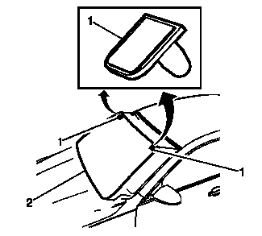

挡风玻璃的更换
专用工具
•
BO-24402-A
车窗玻璃密封胶清除工具（刮刀）
•
BO-39032
固定车窗玻璃拆卸工具
有关等效的当地工具，参见
专用工具
。
拆卸程序
注意:
在分离出固定式车窗玻璃前，在涂漆表面和内饰周围贴上双层遮蔽带。
1.
断开蓄电池负极电缆。参见
蓄电池负极电缆的断开和连接
。
2.
打开发动机舱盖。
3.
拆下挡风玻璃雨刮臂和雨刮片。参见
挡风玻璃刮水器臂的更换
。
4.
拆下进风口格栅板。参见
进气口格栅板的更换
。
5.
拆下挡风玻璃装饰条。 参见
挡风玻璃装饰条的更换－左侧
、
挡风玻璃装饰条的更换－右侧
。
6.
拆下内后视镜。 参见
车内后视镜的更换
。
7.
断开雨量传感器连接器（如装备）。
警告：
如果碎裂的玻璃掉进除霜器出风口，可能被吹入乘客舱，造成人身伤害。

8.
将以下部件盖住，以免碎玻璃进入：
•
前围上隔音垫
•
除霜器出风口和空调出风口
•
座椅和地毯
警告：
参见
有关玻璃和钣金件处理的警告
。
注意:
保持工具刃口紧靠车窗。小心不要损坏车窗拐角定位销。拆卸车窗时，如果车窗定位销被损坏，则安装时务必用胶带将玻璃固定就位。
9.
从车辆内部执行此操作，使用合适的工具在车窗周围切割，将车窗从聚氨酯粘合剂分离。
•
在夹焊凸缘上保留聚氨酯粘合剂底层。
•
合适的润滑液只有清水，而非机油、润滑剂或肥皂。
•
BO-24402-A
玻璃密封胶清除工具（刮刀）
。
•
BO-39032
固定车窗玻璃拆卸工具
。
10.
在助手的帮助下，将定位销(1)和挡风玻璃(2) 从车辆上拆下。
安装程序
1.
将挡风玻璃安装入窗洞。参见
挡风玻璃的粘合安装
。
2.
安装进气格栅板。参见
进气口格栅板的更换
。
3.
安装挡风玻璃雨刮臂和雨刮片。参见
挡风玻璃刮水器臂的更换
。
4.
安装挡风玻璃装饰条。参见
挡风玻璃装饰条的更换－左侧
、
挡风玻璃装饰条的更换－右侧
。
5.
安装内后视镜。参见
车内后视镜的更换
。
6.
连接雨量传感器连接器（如装备）。
7.
拆下涂漆表面和内饰周围的双层遮蔽带。
8.
连接蓄电池负极电缆。
9.
关闭发动机舱盖。